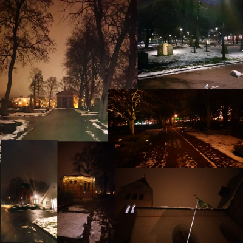
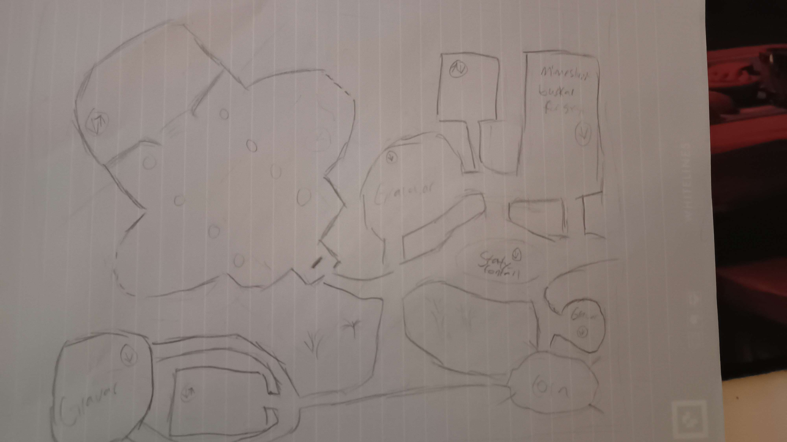
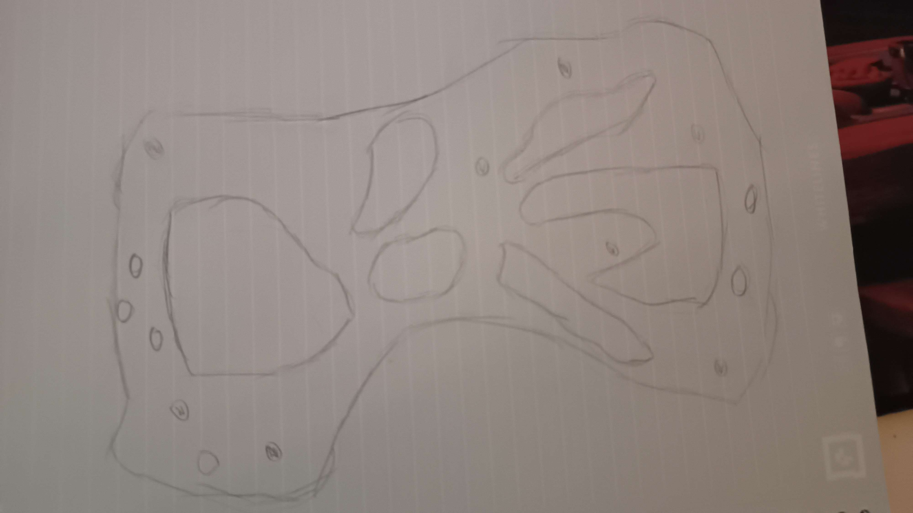

Project Overview
I did this project together with my friend and classmate Ellinor Bergfeldt. I wanted to use our assignment to practice level design, specifically with having a clear location in mind, which I learned from my previous project is very important. We decided to use a graveyard as our setting. Due to the open nature of cemeteries which does not blend well with cover based FPS games, this was a challenge I gladly accepted.
Before breaking down the level design process, I will quickly describe the mechanics of the game.
Ellinor set up the game to work with networks, meaning we did not need to make a local multiplayer version made for controllers.
The game mode is "Kill Confirmed - Free for All", based on the Call of Duty game modes.
The players have unlimited primary ammo, but with limited secondary ammo. Secondary ammo is used for "utility shots", such as creating explosions that push players back or stun them upon impact. This ammo recharges, and if fully expended
the entire weapon will overload, preventing it from being fired at all for a short time, creating an inherent conflict whenever using the utility shots. While they are powerful, they come at a cost that can put you at a disadvantage
if used inaccurately or too much. This creates tension when using these shots, especially when the player only has one left and would have to choose between taking a chance at hitting one of the ulitity shots at the cost of overloading their weapon, or simply
not using these powerful abilities, potentially putting them at risk.
The players do not have crosshairs. This is due to the offset created by using the gun as the starting point for the projectile rather than the camera. We planned on implementing a laser sight that would be visible to all players and could be toggled on or off,
to give the player a choice between stealth and accuracy.
While Ellinor was the main (and trained) programmer, I made some blueprints to prototype mechanics such as health packs. Integrating functions into the network was a step beyond my abilites, but I managed to create locally functional mechanics that clearly communicated my ideas
to Ellinor so she could then create a polished and network integrated version of them. I also modified her existing blueprints to create variations for utility shots.
Level Design Choices
With the setting decided, me and Ellinor visited local cemetaries for inspiration. To see how it might be arranged and look for objects that could be used for cover or concealment.

With these photos we took in mind, I figured that the level could feature a lot of gravestones (shocking), trees, bushes and statues. I also wanted to include crypts, since they are a common building in graveyards and could provide a lot of level design utility.
They are also quite mysterious in my opinion, and somewhat creepy.
Other than actual graveyards, I used Wasteland from the 2009 version of Call of Duty: Modern Warfare 2 as
inspiration. Wasteland is a very open map, which this graveyard map would also be. Most of all, the map gave me courage to go through with making such an open FPS level. I realized that Wasteland uses verticality in the form of smaller hills and trenches to create
most cover and concealment. The map also has the central bushes that act as walls, cutting the map in half.
While exploring the cemetaries, it also struck me that it's important to convey the spookines of the place. This developed into the idea of jumping down into open graves, or following stairs in the cathedral or crypts down into secret underground tunnels.
My visual inspiration for how I imagined this space to look was inspired by the catacombs underneath Paris, and the caverns where Army of the Dead in Lord of the Rings were found.
The idea of adding catacombs or secret tunnel meant I would now be designing two levels that were connected but would function differently. This new space also allowed to me create a space more conventionally suited for FPS games. I sketched
basic layout ideas for both, with indications of where they would connect. Most connections would be one way, this is because most of them would need the player to jump down into a grave to enter the catacombs. This little detail is something I found
fitting, since it is narratively creepy, and gameplay wise it also a risk since the player doesn't know if another player could be lurking down there as they jump plunge into the dark space underneath. The two connections are stairs from the crypts and the cathedral.

Inital layout sketches:

Overworld sketch shown above.

Catacombs sketch shown above.
These sketches gave me a valuable way of roughly planning out the macro space and how it would all be connected. During development I strayed from these sketches, mainly in the catacombs, because I would find out that some spaces would make more sense or play better
if arranged differently. Most notably, the entire catacombs were reworked, since the inital idea had been to convey an experience of claustrophobia but had changed to instead convey mystery. The crypt and graveyard "south" of the cathedral was also replaced by a grove with a
squiggly pathway running through it.
Something I wanted to try with this level was to not use a three lane map design, but rather base the map around different nodes. This posed a challenge in map flow. Three lane maps tend to flow very well by default, but using nodes to instead funnel the flow
was a useful tool and challenge. The main way I controlled the flow as through the passages between the overworld and catacombs, with only three stairways going back up to the overworld but a lot of one way drops into the catacombs. This would generally funnel
players down into the catacombs, the area more conventionally suited for cover based FPS games. It also caused people to always surface in one of the buildings, since two of the staircases are both in the cathedral and the third stairway in the crypt. This caused
an imbalance in traffic, creating busier and quiter areas. For this level I considered this good, since it allowed for different strategies to be used by players. Those who wanted quick and intense gameplay could take part in high traffic areas, while sneakier
players could hang back and set up ambushes.
Lessons learned
I learned a lot about the planning phase of level design, and how nodes can be used to control the flow of a level. This is something I plan on expanding on by first concepting my levels in text before even sketching it out, to really make
sure the level is as coherent as possible and will support the gameplay beats I want to include.
This project gave me a lot of insight into the back end development of online multiplayer games. Having to consider the network when concepting and implementing mechanics is a very valuable lesson that will benefit me on future multiplayer projects.
The project also gave me more hands on experience with blueprints in Unreal, a skill I consider very important.